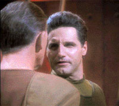
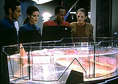
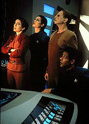

MANCHETE
DO EPISDIO
Primeiro destaque para Odo no escapa
da tecnobaboseira e dos antigos clichs
Episdio
anterior | Prximo
episdio
Sinopse:
Data Estelar:
46421.5.

Quando
Ibudan, um homem que Odo mandou para priso anos antes,
assassinado a bordo da Deep Space Nine, o comissrio
torna-se o principal suspeito do crime e alvo de intolerncia.
Enquanto isso, Keiko O'Brien tenta combater seu senso de
inutilidade profissional na estao promovendo a criao de
uma escola para as crianas de DS9, com o apoio
de Sisko.
Ao final das contas, descobre-se que o assassinado no era
Ibudan, mas sim um clone, produzido pelo prprio com o nico
objetivo de ser morto. O bajoriano planejou tudo em uma tentativa
justamente de incriminar Odo, buscando vingana por seu
encarceramento anos atrs.
Comentrios:
"A Man Alone" tenta aprofundar um pouco mais o
conhecimento do telespectador a respeito de Odo. Por meio deste
episdio, ficamos sabendo um pouco mais sobre o modo de agir e a
tica por trs do comissrio de Deep Space Nine.
Infelizmente, o desenvolvimento poderia ter sido muito melhor, se
a histria em si fosse mais criativa e menos inverossmil.

O
ngulo do assassinato de Ibudan pouco inspirado,
mal-executado, forado e cheio de conveniente e arbitrria
"tecnobaboseira". Para ilustrar isso, basta apontar que
um clone no nem to simples, nem to rpido de se criar.
Na verdade, os processos de clonagem no permitem a criao de
seres adultos a partir de uma cultura de clulas.
Mesmo ignorando isso, fica difcil aceitar que um clone de Ibudan
teria um comportamento similar ao primeiro, uma vez que, mesmo
reproduzidos os aspectos biolgicos, a capacidade mental do clone
estaria severamente prejudicada pela falta de tempo para o
desenvolvimento intelectual e das conexes cerebrais, at para
calmamente receber uma massagem em uma holosute.

O
episdio passa por um clich ao avaliar a situao de
preconceito a que Odo submetido. Seria interessante, se j no
tivesse sido feita "ad nausea" em Jornada nas
Estrelas, com Spock e Data como protagonistas. Apesar de
cenas interessantes como a do ataque a Odo no promenade e a
depredao de seu escritrio, no h nada que retire essas
passagens do status de mera reprise.
O improvvel "tringulo amoroso" desenvolvido entre
Bashir, Sisko e Dax essencialmente inofensivo, porm
relevante.
O melhor aspecto do episdio a abertura de uma escola na estao,
tendo Keiko como professora, para as crianas residentes em DS9,
o que ter boa utilizao dramtica mais tarde.
Nesse episdio tambm comea timidamente a despontar a amizade
entre Nog e Jake.
Citaes:
Odo -
"Commander... laws change depending on who is doing them. The
Cardassians one day, the Federation in the next... But justice is
justice."
("Comandante... as leis mudam dependendo de quem as faz. Num
dia os Cardassianos, no outro a Federao... Mas justia
justia.")
Trivia:
 O episdio marca a introduo em DS9 de Keiko
O'Brien (Rosalind Chao) e Molly O'Brien (Hana Hatae),
respectivamente a esposa e a filha de Miles O'Brien.
O episdio marca a introduo em DS9 de Keiko
O'Brien (Rosalind Chao) e Molly O'Brien (Hana Hatae),
respectivamente a esposa e a filha de Miles O'Brien.
Episdio conta com a participao de Rom e Nog.
Ficha
tcnica:
Histria de Gerald Sanford e
Michael Piller
Roteiro de Michael Piller
Direo de Paul Lynch
Exibido em 18/01/1993
Produo: 003
Elenco:
Avery Brooks como
Benjamin Lafayette Sisko
Ren Auberjonois como Odo
Nana Visitor como Kira Nerys
Colm Meaney como Miles Edward O'Brien
Siddig El Fadil como Julian Subatoi Bashir
Armin Shimerman como Quark
Terry Farrell como Jadzia Dax
Cirroc Lofton como Jake Sisko
Elenco convidado:
Rosalind Chao como Keiko O'Brien
Edward Laurence Albert como Zayra
Max Grodnchik como Rom
Peter Vogt como "um homem bajoriano"
Aron Eisenberg como Nog
Stephen James Carver como Ibudan
Tom Klunis como Ibudan (como um ancio)
Scott Trost como "um oficial bajoriano"
Patrick Cupo como "um homem bajoriano"
Kathryn Graf como "uma mulher
bajoriana"
Hana Hatae como Molly O'Brien
Diana Cignoni como "uma garota de Dabo"
Judi Durand como "a voz do computador"